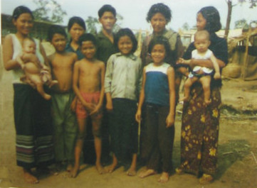
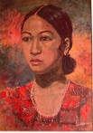
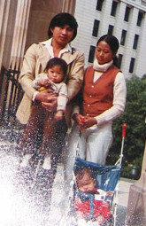

Buntha Nhem
When the Khmer Rogue came to power, Buntha Niem's family were treated especially badly because they supported the previous government. His father was imprisioned and killed. His sister and mother died from illnesses caused by the poor conditions. Buntha was imprisioned for stealing rice at the same prision that his father was killed at, but he escaped.
In 1979, he and his brother escaped across the border to Thailand. They stayed in UN camps and unsuccesfully applied for asylum to the US and Canada. Finally they, were accepted to come to Australia. Whilst at the camps Buntha learned English.

Buntha learning English at a UN camp in Thailand
Buntha Nhem arrived in Australia in 1983 as a 16 year old. Buntha and his brother were able to come to Australia as a result the government sponsoring Cambodian orphans.
He was placed at Burnside orphanage in Sydney. He then went on live independently in a flat. Buntha completed a HSC at Ashcroft highschool. He went on to earn an Accounting Commerce degree at Western Sydney Uni.

Buntha is his flat in Parramatta
“We were lonely. We felt isolated. Some Cambodians got the news that there are Cambodian orphans living in North Parramatta so they came to say ‘hello’ to us. I feel more at home with their faces and languages. It helped me feel I was not alone.”

Buntha and his brother with their car
Challenges
Cambodia was undergoing a series of violent regimes. The Cambodian communist group Khmer Rouge took over the country and imposed communism on the population. Cambodians were made to work in fields for 12-16 hours a day. Any disobedience was punished harshly. Privacy was eliminated. Food was scarce and much of the population was starving.
2 million Cambodians died during the Khmer Rogue regime
Cambodia’s turbulent history has left it a poor and disadvantaged nation. Horrific memories and losses still haunt many of the survivors today.
Due to the horrific conditions many Cambodians decided to leave, escaping across the border to thailand. The UN had refugee camps in Thailand.
Once in Australia Cambodians were faced with racism and a language barrier. Due to their qualifications and experience not being recognised, many Cambodians were forced to become unskilled labourers.
Contributions
A unique culture, history, and language.
Dishes similar to many other Asian nations, but with a French twist.
Cambodian migrants are highly involved in the spread of Buddism, Australia's second biggest religion.
There are around 30,000 people with Cambodian ancestry in Australia.
Map
Bibliograph & Links
Buntha Niem - Migration Heritage Australia
Phiny Ung - Migration Heritage Australia
Cambodians - Dictionary of Sydney
All images are from Migrant Heritage Australia
Map used is Open Street Map
Jack Robbers
Phiny Ung
Coming from Phnom Penh, Phiny Ung was at the epicenter of the Vietnam Civil War. She experienced the evacuation of Phnom Penh in 1975 and numerous other atrocities.
Like Buntha, Phiny's family were persecuted for their connection to the previous government. Her father and 4 siblings were killed by the regime. She was doubtful to the Vietmanese could bring peace, and so decided to leave.
Phiny reunited with people from her village, in Thailand
Phiny and her husband made the journey to Thailand, having to bribe a truck driver and negotiate with both Khmer Rouge resistance and Vietnamese forces.
Phiny Ung and her family were sponsored by her brother-in-law, to live in Brisbane. After staying for a few months with him, she was able to move to her own house in Brisbane and then Sydney.
Phiny worked as a receptionist at a tax office, and then a TAFE teacher for Cambodians learning English.
“Coming to Australia was the feeling of the unknown, the feeling of surviving, feeling to be grateful. I can’t deny I feel relieved and happy but it’s mixed with that sadness. 5th of May 1980, I arrived in Brisbane and that was such a wonderful experience.”
A portrait of Phiny, by her husband
“I used my gesture not accepting that and protest. He just show me out of the shop, like, “You’re not accepted”. I recall I haven’t seen much of Asian appearance at that time so I was really the new face of physical appearance of the migration in the 1980s on the streets of Brisbane.”
Phiny with her family in Australia